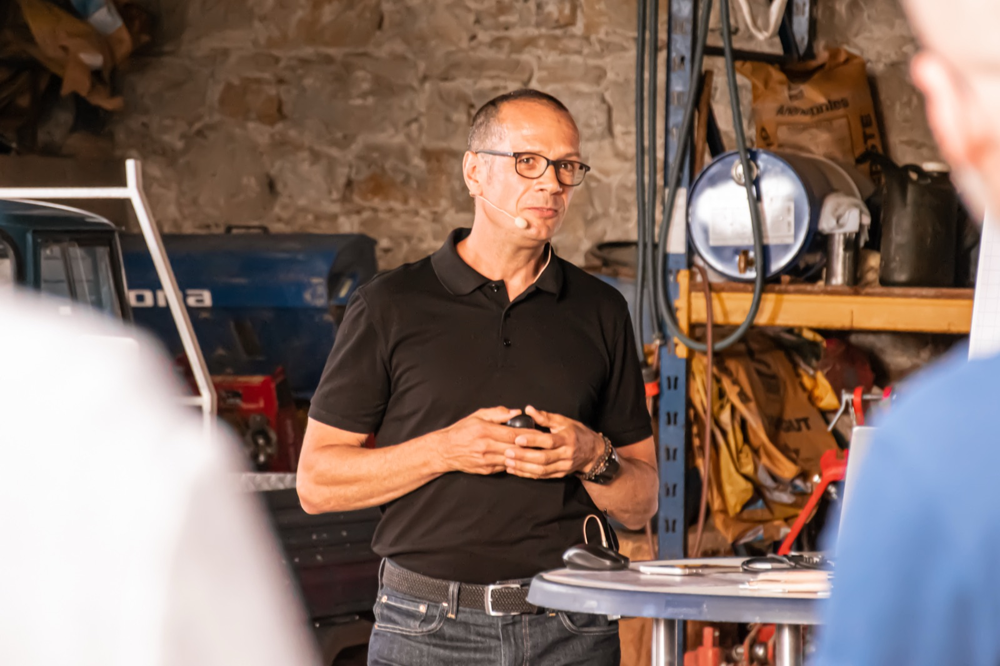

Generationswechsel
Loslassen, ohne zu verschwinden.
Für Unternehmer, die ihr Familienunternehmen in die nächste Generation führen wollen, und für die, die übernehmen. Vor allem im produzierenden Gewerbe und im Maschinenbau. Ich begleite die Übergabe so, wie ich 25 Fahrzeuge in Serie gebracht habe: mit klarem Takt, klaren Schnittstellen und allen an Bord.

Aus dem Werk
Jeder Generationswechsel ist ein Anlauf.
Als Anlaufmanager habe ich ein neues Fahrzeug aus der Entwicklung übernommen, in die Produktion gebracht und an den Kunden übergeben. Der Termin steht fest, und Entwicklung, Logistik, Montage, Qualität und Lieferanten müssen gleichzeitig mitziehen.
Eine Übergabe im Familienunternehmen läuft genauso. Ein Lebenswerk wird übernommen, in neue Hände gebracht und muss am Markt weiterlaufen. Mit vielen Beteiligten, unter Zeitdruck und voller Verantwortung.
Ich habe das 25 Mal erlebt, bei Volkswagen und Porsche Leipzig. Was ich dabei gelernt habe: Am Ende entscheidet nicht der Plan. Es entscheidet, ob die Menschen wissen, wofür sie verantwortlich sind, und ob sie miteinander reden statt übereinander.
Übergaben scheitern selten an der Sache. Sie scheitern an fehlender Klarheit.
Typische Situationen
Kommt dir das bekannt vor?
- Die Nachfolge ist seit Jahren Thema, aber nie dran.Das Tagesgeschäft geht immer vor. Und je länger es dauert, desto schwerer wird der erste Schritt.
- Die nächste Generation ist noch nicht so weit.Oder sie will etwas anderes. Die Frage, wer übernimmt, bleibt offen, und das Unternehmen muss trotzdem weiterlaufen.
- Familie, Beirat und Geschäftsführung reden aneinander vorbei.Jeder meint es gut. Aber keiner weiß genau, wer was entscheidet und ab wann.
- Wissen und Beziehungen hängen an einer Person.Was das Unternehmen wirklich trägt, steht in keinem Handbuch.
- Loslassen fällt schwer.Das Unternehmen ist dein Lebenswerk. Wie du danach weitermachst, ist genauso wichtig wie die Übergabe selbst.
Das Storyboard
Drei Phasen, ein Takt.
Keine Schnelllösung, sondern ein klarer Ablauf. Erst verstehen, dann ausrichten, dann umsetzen. Und ich bleibe, bis es in der Serie läuft.
Das Lebenswerk
Wissen, Werte, Beziehungen. In Gesprächen mit Familie, Führung und Schlüsselpersonen mache ich sichtbar, was trägt.
Was muss bleiben?
Die Übergabe
Rollen, Strukturen, neue Führung. Klare Schnittstellen, ein Takt, alle an Bord. Mit Workshops und Begleitung der Menschen, die übergeben und übernehmen.
Wer trägt was, ab wann?
Die Wirkung
Das Unternehmen läuft stabil in neuer Hand. Team, Kunden und Familie spüren es. Wir sichern, was sich verändert hat.
Woran merkt der Markt, dass es läuft?
Was am Ende steht
Eine Übergabe, die trägt.
- Klare Rollen zwischen Familie, Beirat und Geschäftsführung
- Eine neue Führung, die trägt und Raum bekommt
- Dein eigener Platz danach: loslassen, ohne zu verschwinden
So arbeiten wir zusammen
Je nach Lage der passende Einstieg.
1:1 Begleitung
Ein Sparringspartner für die, die übergeben, und für die, die übernehmen. Für die Entscheidungen, die man nicht im großen Kreis bespricht.
02Workshops
Wenn Rollen, Erwartungen und Schnittstellen auf den Tisch müssen. Damit alle wissen, wer was trägt, und ab wann.
03Impulsvorträge
Jeder Generationswechsel ist ein Anlauf. Die Geschichte aus 25 Serienanläufen, übertragen auf die Übergabe im Mittelstand.
Ich begleite nur wenige Übergaben gleichzeitig. So bin ich wirklich dabei, wenn es darauf ankommt.
Hier steht eine Fallstudie: die Ausgangslage, der Wendepunkt, was Andreas konkret getan hat und was danach anders war.
Der erste Schritt
Wo steht deine Übergabe?
Ein ehrliches Gespräch, das Anlaufgespräch: 30 Minuten, kostenfrei. Was muss bleiben, wer übernimmt, was ist der nächste Schritt?
Calendly wird gerade eingerichtet.